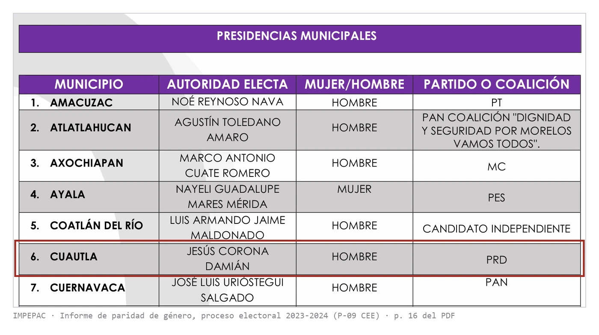
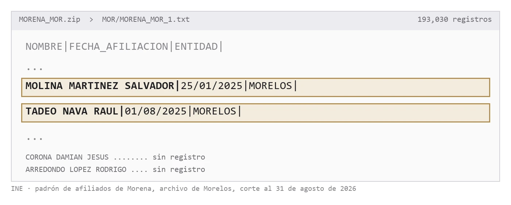
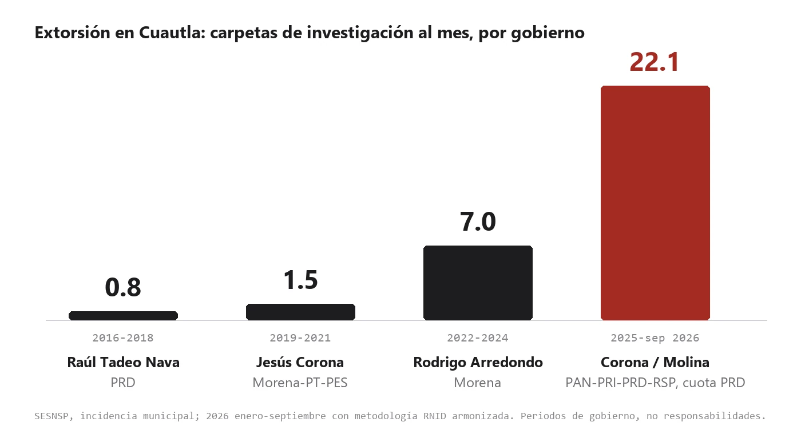
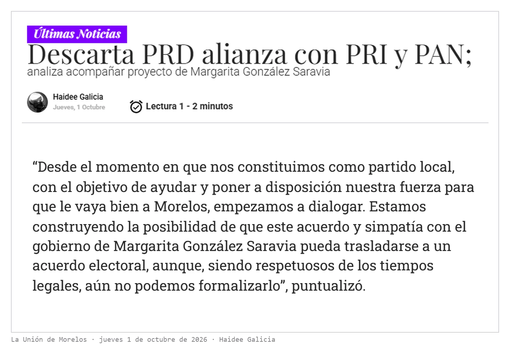

Hagamos memoria
Morena presenta a Jesús Corona como el alcalde de la oposición en Cuautla. El informe de paridad del IMPEPAC lo registra en 2024 como cuota del PRD, el mismo partido que hoy construye un acuerdo electoral con el gobierno de Margarita González Saravia. Once años de boletas, el padrón de afiliados del INE y las carpetas de extorsión, que subieron con cada gobierno sin importar la sigla.
La fila 6
El Instituto Morelense de Procesos Electorales y Participación Ciudadana publicó un informe de 41 páginas sobre la paridad de género en los ayuntamientos electos en 2024. Sirve para contar mujeres y hombres, un trámite que pocos abren fuera de la oficina. En la página 16 viene la tabla de las 33 presidencias municipales, con una casilla al final de cada fila: partido o coalición. En Atlatlahucan esa casilla dice "PAN coalición Dignidad y Seguridad por Morelos Vamos Todos". En Jiutepec dice RSPM, también con el nombre de la coalición. En la fila 6, la de Cuautla, junto a Jesús Corona Damián, la casilla tiene tres letras: PRD.

No es descuido de quien llenó la tabla. Una coalición reparte sus candidaturas entre los partidos que la firman, y la de Cuautla le correspondió al PRD. El propio partido lo dijo en voz alta. El 25 de marzo de 2024, horas después del ataque a balazos contra Corona, su dirigente nacional, Jesús Zambrano, condenó el atentado "contra el candidato a Presidente Municipal del @PRDMexico y la Coalición opositora de Cuautla Morelos".
Esa palabra, opositora, es la que hoy se disputa. Morena presenta a Corona como alcalde de la oposición, y en un sentido tiene razón: llegó en la boleta del PAN, el PRI, el PRD y Redes Sociales Progresistas, contra el candidato de Morena. Solo que la palabra carga dos significados. Uno es la sigla con la que alguien aparece en el acta; el otro, el lugar que ocupa frente a un gobierno. El primero se lee en la tabla del IMPEPAC. El segundo se lee después, en lo que hace cada quien, y del segundo Corona ya dejó constancia: se presentaba como presidente nacional de un movimiento obradorista siendo alcalde, como se documentó en El obradorista de la oposición.
Las boletas
Para saber cuál de los dos pesa más hay que ir hacia atrás. En 2015, Raúl Tadeo Nava ganó Cuautla por el PRD solo, con 16,585 votos, mientras Morena, que llevaba un año con registro, quedaba en quinto lugar con 4,211. En 2018 ganó Corona por Morena, el PT y Encuentro Social, con 27,643. Tres años después ganó Rodrigo Arredondo por Morena, con 17,226. En 2024 Corona volvió, ahora como cuota del PRD en la coalición contraria, con 28,727 votos. Enfrente tuvo a Arredondo, que buscaba reelegirse por Morena y se quedó con 22,493.
Antes de Tadeo había gobernado Jesús González Otero, postulado también por el PRD. Son quince años, de 2013 a 2027, con alcaldes que llegaron por el PRD o por Morena. Cinco gobiernos seguidos, dos partidos y un político que se cambió de camiseta entre una elección y otra sin cambiar de municipio.
El padrón
La otra mitad de la memoria es dónde terminó cada uno. El INE publica el padrón de afiliados de cada partido, y el de Morena, con corte al 31 de agosto de 2026, trae 193,030 registros en Morelos. Ahí aparece Raúl Tadeo Nava, afiliado desde el 1 de agosto de 2025. Aparece también Salvador Molina Martínez, el presidente municipal de hoy, electo como suplente en la planilla de la coalición: su afiliación a Morena es del 25 de enero de 2025, menos de ocho meses después de aquella elección. El padrón no trae municipio ni clave de elector, así que la coincidencia es por nombre completo y entidad.
Arredondo no está en el padrón. Hoy es director general del Conalep en el gobierno de Margarita González Saravia. Corona tampoco aparece; está vinculado a proceso, con la presunción de inocencia que eso conserva.
Decir oposición y detenerse en 2024 es contar Cuautla con once años menos.

Los cuatro que han gobernado Cuautla desde 2016 terminaron del lado de Morena: dos afiliados, uno en su gobierno y otro que se anunciaba obradorista hasta que lo detuvieron. No son cuatro militantes, ni hace falta que lo sean. Paul Ricoeur describió la memoria manipulada como la que se apoya en un relato selectivo, porque siempre se puede narrar de otro modo, suprimiendo personajes o moviendo los acentos. Decir oposición y detenerse en 2024 es contar Cuautla con once años menos.
Las carpetas
Esta cuenta tiene límites, y conviene ponerlos sobre la mesa. Las carpetas de investigación las abre la Fiscalía del estado, no el ayuntamiento: la serie dice qué pasó en cada trienio, no prueba que un alcalde lo haya causado. El homicidio doloso bajó 35% con el gobierno actual respecto al de Arredondo, y en 2026 bajó en todo Morelos. Las carpetas cuentan denuncias, no delitos, y desde 2025 se ha reportado una campaña federal para que la extorsión se denuncie más, aunque la subida empezó en 2023. Afiliarse a otro partido, por último, es un derecho, no una falta.
Con todo, la extorsión no concede nada. Con Tadeo se abrían 0.8 carpetas al mes; con el primer gobierno de Corona, 1.5; con Arredondo, 7.0; desde enero de 2025, 22.1. Subió con cada gobierno, sin importar la sigla. Son cinco por semana, cinco cobros de piso que alguien se animó a denunciar, en un municipio que cerró 2025 con 7,543 delitos, la cifra más alta de toda la serie.

Octubre
El jueves 1 de octubre, La Unión de Morelos publicó una entrevista con Sergio Erasto Prado Alemán, dirigente estatal del PRD, que en Morelos ya compite como partido local. Descartó ir con el PRI o con el PAN en 2027. Sobre el gobierno estatal dijo esto: "Estamos construyendo la posibilidad de que este acuerdo y simpatía con el gobierno de Margarita González Saravia pueda trasladarse a un acuerdo electoral, aunque, siendo respetuosos de los tiempos legales, aún no podemos formalizarlo". Tres semanas después habló de unidad de las izquierdas, sumó a Nueva Alianza y al PT entre las opciones y repitió que todavía no hay definiciones.

El partido que firmó la candidatura del opositor explora ahora un acuerdo electoral con el gobierno al que se enfrentó en 2024.
En la fila 6 de aquel informe de paridad, la casilla de Cuautla sigue diciendo PRD.
El obradorista de la oposición Ver el expediente →
- Instituto Morelense de Procesos Electorales y Participación Ciudadana (IMPEPAC), Informe en materia de paridad de género del proceso electoral 2023-2024 correspondiente a los ayuntamientos (P-09 CEE), apartado V, p. 16 del PDF: old.impepac.mx/wp-content/uploads/2025/07/P-09-CEE_INFORME%20FINAL%20PARIDAD%2013M.pdf
- Zeta Tijuana, "Intentan asesinar a candidato del PRI-PAN-PRD-RSP a alcaldía de Cuautla, Morelos", 25 de marzo de 2024, con la declaración de Jesús Zambrano: zetatijuana.com/2024/03/intentan-asesinar-a-candidato-del-pri-pan-prd-rsp-a-alcaldia-de-cuautla-morelos
- IMPEPAC, cómputos municipales de Cuautla 2015, 2018, 2021 y 2024, procesados en la base electoral de 45 Digital Noticias; resultados oficiales en impepac.mx
- El Universal, "Morena pierde presencia en Morelos; Cuautla, Jiutepec y Temixco optan por la oposición", 31 de diciembre de 2024: eluniversal.com.mx/estados/morena-pierde-presencia-en-morelos-cuautla-jiutepec-y-temixco-optan-por-la-oposicion
- Instituto Nacional Electoral, padrón de afiliados a partidos políticos nacionales, Morena, archivo de Morelos, corte al 31 de agosto de 2026: ine.mx/actores-politicos/partidos-politicos-nacionales/padron-afiliados
- Gobierno del Estado de Morelos, "Inicia Conalep Morelos ciclo escolar 2026-2027", 10 de agosto de 2026: morelos.gob.mx/ultimas-noticias/inicia-conalep-morelos-ciclo-escolar-2026-2027
- El Financiero, "Operación Enjambre: procesan a alcalde de Cuautla por delincuencia organizada", 6 de junio de 2026: elfinanciero.com.mx/nacional/2026/06/06/operacion-enjambre-procesan-a-alcalde-de-cuautla-por-delincuencia-organizada-fue-detenido-en-acapulco
- Secretariado Ejecutivo del Sistema Nacional de Seguridad Pública, incidencia delictiva municipal del fuero común, carpetas de investigación, Cuautla (clave 17006), 2016-2025 y enero a septiembre de 2026 (metodología RNID): gob.mx/sesnsp/acciones-y-programas/datos-abiertos-de-incidencia-delictiva
- La Unión de Morelos, Haidee Galicia, "Descarta PRD alianza con PRI y PAN; analiza acompañar proyecto de Margarita González Saravia", 1 de octubre de 2026: launion.com.mx/morelos/avances/noticias/300662-descarta-prd-alianza-con-pri-y-pan-analiza-acompanar-proyecto-de-margarita-gonzalez-saravia.html
- La Unión de Morelos, "Objetivo electoral, impulsar candidatos capaces de atender los problemas de Morelos: Prado Alemán", 25 de octubre de 2026: launion.com.mx/morelos/avances/noticias/301953-objetivo-electoral-impulsar-candidatos-capaces-de-atender-los-problemas-de-morelos-prado-aleman.html
- 45 Digital Noticias, "El obradorista de la oposición", 1 de octubre de 2026: 45digitalnoticias.github.io/columnas/el-obradorista-de-la-oposicion.html
- Ricoeur, Paul (2000), La memoire, l'histoire, l'oubli, París, Seuil. Edición en español: La memoria, la historia, el olvido, Fondo de Cultura Económica, 2004.
Las ligas van a la vista para que cualquiera compruebe por su cuenta. Si alguna dejó de resolver, escríbenos y la reponemos.
SRVO